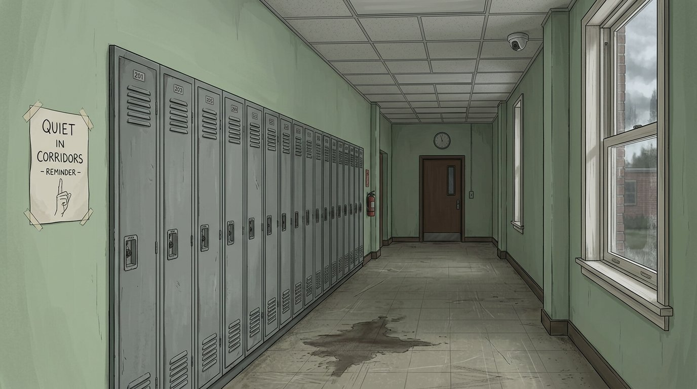

Наведи курсор на объект и держи взгляд ~1,2 сек. Что окажется триггером — неизвестно.

Каждый фрагмент живёт своей жизнью: стабильность падает, данные конфликтуют.
⚠ ВНИМАНИЕ — конфликтующие данные по фрагменту #017
Майк помнит: «В комнате было 4 человека».
Уилл помнит: «В комнате было 3 человека».
Архив говорит: «В комнате было 2 человека».
Истина не хранится нигде. Игрок решает сам.
Сцена повторяется. Второй раз она немного другая. Игра не объясняет почему.
Перетащи один факт на другой. Если связь есть — архив её найдёт.
НАЙДЕННЫЕ ФАКТЫ
ВЫВОДЫ
связей пока нет
Разложи фрагменты на холсте памяти и запусти реконструкцию. Неверно — получишь ложное воспоминание.
ВОСПОМИНАНИЕ 11-G
WILL ↔ MIKE
SYNC: 0%
Каркас главного меню и мета-систем.